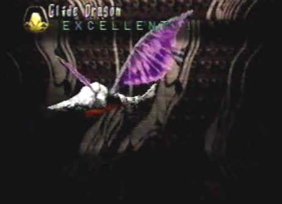
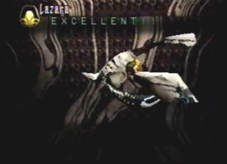
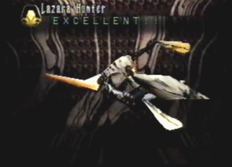
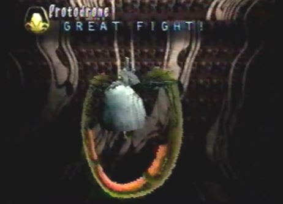

Glide Dragon  |
Strategy These small dragons were easily taken down with the dragon's Judgment Day berserk attack. |
Divine Enemy Info
Normal/Attack Direction Bio Plasma/Left and Right Special Bio Energy/Front |
Length 18.0 Ln Height 4.5 Ln Width 58.5 Ln Weight 1040 Kn Dynes 20 Dn Exp Pts 87 EXP Items Feener Armor
Lickuern Eyes |
Lazara  |
Lazara Hunter  |
Strategy We had fought these enemies many times before, so it was quite easy to destroy them. One blast from the dragon's Judgment Day berserk attack, and they were no more. |
Protodrones |
Drone
|
Protodrone  |
Strategy We had fought these Ancient Age machines once before, during our infiltration of Mel-Kava. First, we moved to the side of the two machines. The machines were now positioned to the left and right sides. I took out the first machine (the one with the four objects protruding from its head), with my gun. The last one was now left. The dragon flew in front of it and I finished it off with one final blow from my ever so powerful gun. |